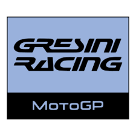

Gresini Racing
Who is the Owner of this team ?
The team was founded by two-time 125cc world champion Fausto Gresini. Following his death in 2021, his wife, Nadia Padovani, took over as the team owner and principal, making her the first woman in Italy to lead a MotoGP team.
Origin of the team
The team was founded in 1997 to compete in the 500cc class (the predecessor to MotoGP). It has a long history with various manufacturers in multiple classes, but its most recent and highly successful chapter began with a return to being a fully independent team running Ducati machinery.
Achievemet of the team
Gresini Racing has a rich history of achievements, including world championship titles in the 250cc, Moto2, and Moto3 classes. In the premier MotoGP class, they have secured numerous race wins and podium finishes.
Formed in which year
The team was formed in 1997
Years with major wins
The team has enjoyed success across its history. Notable periods of major wins include the mid-2000s with riders like Sete Gibernau and Marco Melandri, and its most recent chapter since becoming a Ducati satellite team in 2022, which has brought multiple victories
The famous riders of team